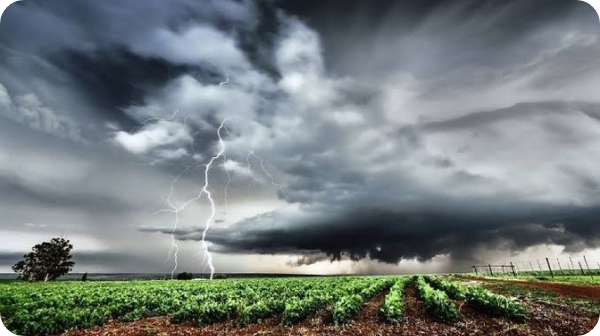

Pengaruh Perubahan Iklim
Pengaruh Perubahan Iklim
Terhadap Pertanian
Dampak perubahan iklim telah menjadi kenyataan di Indonesia. Indikasi perubahan iklim tersebut adalah adanya kenaikan suhu udara, kekeringan, bencana banjir, bergesernya musim hujan, peningkatan muka air laut dan peningkatan iklim ekstrim.
Baca SelengkapnyaPengaruh Pergeseran Musim Hujan, Banjir dan Kekeringan
Dalam beberapa tahun terakhir ini pergesaran musim hujan menyebabkan bergesernya musim tanam dan musim panen komoditi pangan. Sedangkan banjir dan kekeringan menyebabkan gagal panen, gagal tanam dan bahkan menyebabkab puso.